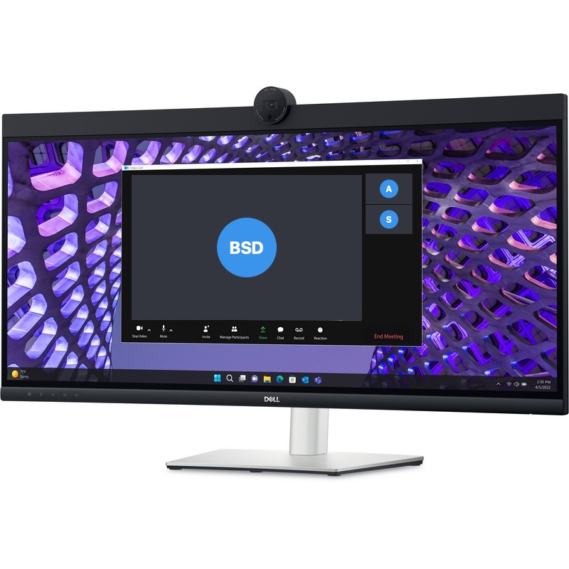

34 אינץ' קעורDell Pro 34 Curved P3424WEB
34 אינץ' קעור · מצלמה 2K · USB-C 90W
מסך רחב וקעור של 34 אינץ' עם כל מה שצריך לשיחות וידאו: מצלמה 2K, מיקרופונים ורמקולים מובנים, מאושר Microsoft Teams ו-Zoom. כבל USB-C אחד מחבר את הנייד, מטעין אותו (90W) ומחבר אותו לרשת.
🖥
מסך רחב וקעור
34 אינץ'
WQHD 3440×1440 ביחס 21:9 וקימור 3800R: שטח עבודה כמו שני מסכים, בלי מסגרת באמצע.
🎥
ועידות וידאו
מצלמה 2K
מצלמה 4MP עם IR לכניסה בזיהוי פנים (Windows Hello), 2 מיקרופונים ו-2 רמקולים 5W.
- 🔌USB-C 90Wתמונה, נתונים וטעינה לנייד בכבל אחד
- 🌐רשת קווית מובניתיציאת RJ-45 1Gbps דרך המסך
- ⌨️KVMמקלדת ועכבר אחד לשני מחשבים
- ✅מאושר Teams ו-Zoomכפתורי שיחה וחיבור מושלם
למי זה מתאים?
💼
מנהלים ומשרד ביתי
מסך אחד במקום שני מסכים, מצלמה ורמקולים.
📊
אקסל ומסחר
גיליונות רחבים, כמה חלונות זה לצד זה.
💻
עמדת עגינה לנייד
כבל USB-C אחד: מסך, טעינה 90W, רשת ו-USB.
🎥
שיחות וידאו
מצלמה 2K ומיקרופונים מובנים, בלי אביזרים.
קצב הרענון הוא 60Hz: מסך לעבודה ולשיחות, לא למשחקים מהירים.
מפרט טכני
| גודל | 34 אינץ' (86.7 ס"מ), קעור 3800R |
|---|---|
| רזולוציה | WQHD 3440×1440, 21:9 |
| פאנל | IPS |
| קצב רענון | 60Hz |
| זמן תגובה | 5ms (Fast) · 8ms |
| בהירות | 300 ניט |
| צבעים | 99% sRGB, 1.07 מיליארד צבעים |
| מצלמה | 4MP RGB + IR (2K 30fps / FHD 60fps), תומכת Windows Hello |
|---|---|
| שמע | 2 מיקרופונים דיגיטליים · 2 רמקולים 5W |
| אישורים | Microsoft Teams · Zoom |
| USB-C | USB-C (DisplayPort + טעינה עד 90W) · USB-C נוסף עם 15W |
|---|---|
| מסך | HDMI · DisplayPort 1.2 |
| USB ורשת | 3× USB-A · USB-B · רשת RJ-45 1Gbps · KVM |
| שמע | שקע אוזניות/מיקרופון 3.5 מ"מ |
| מעמד | גובה, הטיה וסיבוב |
| נוחות עיניים | ComfortView Plus, ללא הבהוב |
| משקל | 10.83 ק"ג עם מעמד |
| דגם | Dell Pro 34 Plus Video Conferencing Monitor P3424WEB |
המפרט לפי Dell ועשוי להשתנות. התמונות להמחשה בלבד.